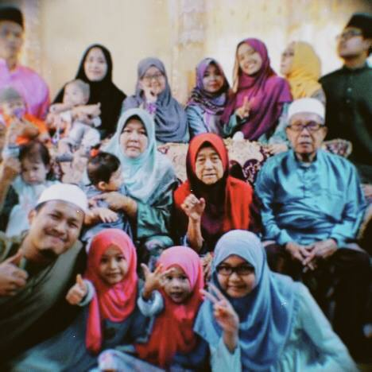

| HOMEPAGE | ABOUT ME | EDUCATION | FAMILY | GALLERY | CONTACT |
|---|

For me, family consists of individuals who genuinely care about you and want you to succeed. My core values include helpfulness, respect, health, honesty, and collaboration; my family is aware of my values, and I am aware of theirs. We develop mutual respect and support through learning about one another's ideas. People with open hearts that want to accept you for who you are as a human being. Even if everything goes wrong and a crisis occurs, you can always count on your family. Family helps you reconnect with your ideas and make sensible judgements.
| BIL | NAME | RELATION | STATUS |
|---|---|---|---|
| 1 | Ismail Bin Mamat | Father | Married |
| 2 | Sobariah Binti Dolah | Mother | Married |
| 3 | Sumariati Binti Ismail | 1st Sister | Married |
| 4 | Mohd Habibullah Bin Ismail | 2nd Brother | Married |
| 5 | Mohd Fadhil Bin Ismail | 3rd Brother | Married |
| 6 | Nazirah Binti Ismail | 4th Sister | Married |
| 7 | Mohd Fairuz Bin Ismail | 5th Brother | Single |
| 8 | Nor Afiqah Binti Ismail | 6th Sister | Single |
| 9 | Shahriezah Binti Ismail | 7th Sister | Single |
| 10 | Nur Syahiera Binti Ismail | Me! | Single |
| 11 | Nur Maisarah Binti Ismail | 9th Sister | Single |
| 12 | Nur Aryna Batrisya Binti Ismail | 10th Sister | Single |